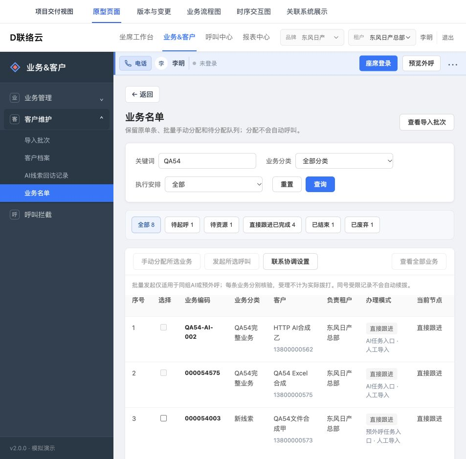

HTTP 实际验收与修复报告
三条主流程已实际走通并修复发现的问题。全量验收暂不判通过：22组检查中13组已验、9组部分已验，未验子项逐条保留。
冻结当前需求 · 仅HTTP本地有限Mock · 开发包未更新
3主流程实际闭环
66 / 1102回归脚本 / 通过用例
576 / 576开发包文件及集合未变
实际走通的流程
修复内容与复现依据
以下按9个根因或展示主题归组，不把组数等同于缺陷数量；修前、修后和自动回归证据均保留。
已确认的厚朴既有专业任务未进入原任务目录
保存查询成功的HP004场景只持久化sceneRows，原任务卡片和currentWorkflowTasks仅遍历MockSceneList；既有专业任务事实未被准确关联到该同一入口。修复为无写入的准确投影，非创建供应商任务。
文件：js/adapters/ai-task-directory.js、scripts/ai_task_directory_build.py、js/components/module-host.js、scripts/build-modules.py
修前：ai-04-scene-saved 截图 · ai-05-scene-reload-mapping 截图 · ai-06-missing-task-by-scene 截图 · ai-07-missing-task-by-remote 截图
修后：ai-08-directory-fixed 截图 · ai-09-exact-task-detail 截图 · ai-10-dynamic-import-context 截图 · step54-ai-task-directory-source.json · check-ai-task-directory.json
任务导入和明确执行的资格及配置指纹口径不一致
同一原生明确未启动状态被raw status=unknown占位再次拒绝；私有导入保存原catalog完整scene包装FP，而无标签依赖执行用底层executionFP；任务导入basis多了已知成功准入字段且键序不同。三个表示/资格差异连续阻断同一完整链，不作为三个独立业务功能缺陷夸大统计。
文件：js/adapters/four-node-execution.js
修前：ai-14-imported-needs-scene-review 截图 · ai-15-execution-signature-mismatch 截图 · ai-16-execution-directory-empty 截图 · step54-ai-chain-before.json
修后：ai-17-unchanged-records-ready 截图 · ai-19-active-reload 截图 · ai-20-system-archive-snapshot 截图 · ai-21-direct-completed 截图 · check-task-import-execution-chain.json
任务导入成功与失败剩余行的反馈未同步原始事实
部分成功后剩余编辑行重新编号，原检查或文件物理行依据未就近标注；完成后controls状态变更但关闭按钮仍保留取消文案。修复保留原消息并显式标注检查时原始行，刷新结束态文案。
文件：js/adapters/task-business-import.js
修前：pred-07-partial-saved 截图 · pred-10-resumed-saved 截图 · step54-partial-line-before.json
修后：pred-08-partial-restored 截图 · pred-09-repaired-ready 截图 · pred-11-original-list 截图 · ai-13-imported-close-fixed 截图 · file-02-csv-partial-origin-fixed 截图 · file-03-csv-origin-restored 截图 · step54-partial-line-after.json · check-simple-task-import-ui.json
分类导入准备阶段数量和未配置路由提示误导
用于字段推导的单条schema探针被显示成真实名单数量；尚未关联路由和已引用模板不存在共用失真提示。分别改为检查后确定数量与精确维护指引，原未配置阻断保留。
文件：js/adapters/four-node-workspace.js
修前：cat-03-unconfigured-import-blocked 截图 · cat-08-empty-import 截图 · step54-category-count-before.json
修后：cat-10-empty-count-fixed 截图 · cat-11-numeric-rejected 截图 · cat-12-count-invalidated 截图 · cat-28-unconfigured-route-fixed 截图 · step54-category-count-after.json · check-execution-arrangement-workspace.json
新运行未分配却残留上次运行排队事实
排队时间和顺序曾从记录级旧安排回落到新运行，未明确当前run/node/有效安排归属；新运行与旧未分配残留可能被当成已入队。修复按当前安排/运行读取，保留旧封存历史。
文件：scripts/four-node-model.js、js/adapters/four-node-workspace.js、scripts/four_node_model_build.py
修前：step54-reopen-queue-before.json · step54-reopen-queue-ui-before.json
修后：cat-25-new-run-after-abandon 截图 · cat-26-reopen-cleanup 截图 · cat-27-unqueued-display-fixed 截图 · step54-reopen-queue-ui-after.json · step54-reopen-queue-current-built-summary.json · check-execution-arrangement.json
独立业务名单刷新回读到旧导入批次
会话恢复将PAGE-2226独立业务列表当成必须带批次身份的上下文页，合法空过滤位置回落到PAGE-2204并带回原批次；只修独立列表恢复资格，详情仍需准确记录。
文件：js/components/session-store.js、index.html
修前：qa54-session-restore-repro.json · step54-workspace-position-before.json
修后：cross-03-before-restore-fix-reload 截图 · cross-04-main-restore-fixed 截图 · step54-workspace-position-after.json · check-workspace-position.json
AI系统归档快照沿用空责任跟进人字段
AI无独立责任跟进人的现行模型仍使用旧责任字段表格行，空值展示使系统归档主体语义不清。仅在无明确AI责任事实时省略旧空行，历史明确人名/标签保留。
文件：js/adapters/four-node-workspace.js
修前：step54-ai-responsibility-before.json
修后：ai-20-system-archive-snapshot 截图 · step54-ai-responsibility-after-final.json · check-execution-arrangement-workspace.json
场景参数有效必填显示遗漏显式映射
下方场景表对原模板已有参数仍画vendor row.required，未合并该准确mapping.required及所引用分类字段要求；保存和实际导入校验未丢必填。上方原供应商模板表本应保持raw。
文件：scripts/ai-import-field-ui.js
修前：ai-02-reference-mapping 截图 · ai-03-scene-draft 截图 · ai-05-scene-reload-mapping 截图 · ai-11-custom-required-rejected 截图 · step54-required-display-before.json
修后：ai-25-effective-required-readback 截图 · step54-required-display-after.json · check-ai-import-field-dialogs.json
关闭动画期间快速重开使新AI场景初始化命中旧抽屉
原关闭延迟320ms删除旧backdrop，新showAdd/Edit立即插入同ID节点；ID选择器和字段状态指向旧节点，新抽屉HP区/映射未初始化，旧层移除后显半空并出现错误脏状态。旧timer也无条件恢复body滚动。不是已保存mapping被删除，也不是旧timer直接清空持久配置。
文件：scripts/ai_parity_build.py、scripts/check-ai-import-field-dialogs.cjs
修前：ai-35-cancel-dirty-readback.txt · ai-36-fast-reopen-before.txt · ai-36-fast-reopen-before.png · source-before.json
修后：ai-37-fast-reopen-after.txt · ai-38-reopen-clean-close.txt · scene-reopen-fix.json
仍未完成的实际验证
- CSV/XLSX模板下载按钮已实际点击，但工具未返回完成事件，限定目标文件名的下载目录前后对比也未确认本轮新文件；仅“已生成”提示，暂不能判下载落地通过，也未据此认定产品缺陷。
- 录音控件、文本及详情页签实际查看；没有验证真实可听音频，未提交新增拒联限制，具体无权账号拒联反向入口未实点。
- 未知导入原请求回执、停止/ABANDONING/新周期组合，以及部分配置失效、条件分流、电话现场、跨租户转交来源截止等子项未全部实点，详见9组partial清单。
- 用户改用HTTP，本报告不证明双击file://方式；不重复尝试被工具禁止的协议。
- 仅本地有限Mock和合成名单；未调用真实供应商、真实CTI或生产接口。开发包保持冻结。
22组检查的真实覆盖
“部分已验”不是失败或通过；展开可见实际完成和未执行的子项。下载、真实音频和真实接口均不借用脚本结果替代。
已验 HTTP-01 当前HTTP入口登录／恢复租户及菜单、刷新保留；不代表离线通过
- HTTP入口正常登录/总部租户菜单恢复，原任务仍存在；浏览器刷新后主业务名单位置和范围保持。
- 取消重开修复后的最新构建，QA54关键词仍8条，三条来源/完成状态保留，无新执行或业务记录。
http-01-login 截图 · pred-04-refresh-edit 截图 · cross-04-main-restore-fixed 截图 · cross-08-final-current-build 截图
已验 AI-01 场景创建／编辑、供应商来源、添加字段弹窗、保存取消与回读
- 厚朴准确已有任务查询，导入字段选择/供应商自定义列配置、必填映射保存、刷新回读，供应商原模板与场景有效映射区分。
- 改名脏草稿取消并明确放弃、正常重开原名/HP004/预算和供应商备注映射保留。
- 快速取消后关闭动画期间立即重开的真实映射丢失有修前ai-36；最新构建同动作ai-37映射完整，随后ai-38正常关闭无错误脏guard。
ai-01-query-linked 截图 · ai-02-reference-mapping 截图 · ai-03-scene-draft 截图 · ai-05-scene-reload-mapping 截图 · ai-25-effective-required-readback 截图 · ai-34-api-test-restored-manual 截图 · ai-35-cancel-dirty-readback 截图 · ai-36-fast-reopen-before 截图 · ai-37-fast-reopen-after 截图 · ai-38-reopen-clean-close 截图
已验 AI-02 准确任务／场景／分类绑定，任务卡片查看及状态资格
- 已保存场景的任务目录连接缺陷有修前/修后；准确HP004任务卡片与详情恢复，锁定QA54分类/场景，未启动与未知供应商计数准确显示；缺准确关联的API任务拒绝手工导入并提供维护提示。
ai-06-missing-task-by-scene 截图 · ai-07-missing-task-by-remote 截图 · ai-08-directory-fixed 截图 · ai-09-exact-task-detail 截图 · ai-10-dynamic-import-context 截图 · ai-28-api-config-guard 截图
部分已验 AI-03 任务手工动态模板／上传或粘贴／逐行检查／确认／直接名单原表
- 场景驱动5列；粘贴2行及实际xlsx文件1行检查/确认，前导零、数值30.25、供应商备注保留，TASK/DIRECT及原任务表回读。
尚未实际验证：
- 下载CSV/XLSX虽曾点击，但未收到可靠download事件/未取得本轮新文件，文件落地和可再次导入未实际验成。
ai-10-dynamic-import-context 截图 · ai-12-ready 截图 · ai-13-imported-close-fixed 截图 · ai-22-xlsx-real-preview 截图 · ai-24-xlsx-confirmed 截图 · ai-29-xlsx-business-readback 截图
部分已验 AI-04 重复／必填错误、编辑重检、部分与待核合同、关闭草稿
- 场景专属必填缺失阻断全部确认；修正后两行全部通过；无通话结算须真实依据及说明。
尚未实际验证：
- AI任务重复编码单独负例本轮未独立保存证据（预外呼重复负例不能替代）。
- 原请求未知回执的按钮、关闭阻断和同次核对本轮未实际注入验证。
- AI未保存名单的关闭/放弃完整往返本轮无独立回读证据。
ai-11-custom-required-rejected 截图 · ai-12-ready 截图 · ai-30-no-contact-reason-required 截图
已验 AI-05 API任务只读接收说明及关闭，不混入手工导入
- 缺关联API配置负例；专用验收场景实际保存AUTO后，准确任务只读接收5列，无手工上传/确认；随后恢复MANUAL并整页刷新回读，原映射和3条人工来源记录保留。
ai-28-api-config-guard 截图 · ai-33-api-linked-readonly 截图 · ai-34-api-test-restored-manual 截图
部分已验 AI-06 通话详情录音／文本、列表仅详情、原来源拒联入口及权限
- 原AI通话列表只有详情；实际打开准确会话，文本/详细信息页签可见，拒联仅在详情；系统归档快照空责任人不再误报待分配。
尚未实际验证：
- 录音按钮已点，但真实音频播放/可听内容未验证。
- 拒联入口仅观察有权人员可见，未提交新增限制；非授权账号对该具体入口的反向点击未独立验证。
ai-26-original-call-list 截图 · ai-27-original-detail-tab 截图 · ai-20-system-archive-snapshot 截图
已验 PRED-01 4步新任务：分类／来源、接听团队、手工执行、确认创建
- 空名称可见错误；4步创建分类/手工来源、李明9001接听团队、导航与最小座席、手工启动；创建后实际列表/刷新/编辑配置保留。
pred-01-required 截图 · pred-02-create-summary 截图 · pred-03-created 截图 · pred-04-refresh-edit 截图
部分已验 PRED-02 编辑任务分类与来源锁、无配置和失效反馈
- 已创建任务编辑页分类新线索、接听团队/导航和原分配模式保持可见，原ID不改。
尚未实际验证：
- 未关联分类或关联失效的预外呼任务导入负例，本轮未实际单独操作。
- 改变分类/来源后保存与锁定的完整正反路径，本轮未单独形成证据。
pred-04-refresh-edit 截图
部分已验 PRED-03 任务内及列表顶部同一导入、分类字段自动、检查确认回读
- 任务内自动分类/4列，检查确认及原表2条DIRECT回读；真实CSV文件选择、BOM/空行/前导零与物理原行号处理。
- 列表顶部导入选择QA54准确任务后同一共享表单加载，自动新线索4列，无重填分类。
尚未实际验证：
pred-06-partial-ready 截图 · pred-11-original-list 截图 · pred-12-task-record-detail 截图 · file-01-csv-preview 截图 · file-02-csv-partial-origin-fixed 截图 · file-03-csv-origin-restored 截图 · pred-20-top-entry-same-form 截图
已验 PRED-04 0有效重复提示、行编辑后重检、有效子集及剩余草稿
- 0有效重复明确禁用；1有效1缺失允许有效子集保存，成功行不重复，失败草稿关闭保留/重开/编辑/重检/续入；CSV原物理第4行与当前第2行并列提示，不误改前导零。
pred-05-duplicate 截图 · pred-06-partial-ready 截图 · pred-07-partial-saved 截图 · pred-08-partial-restored 截图 · pred-09-repaired-ready 截图 · pred-10-resumed-saved 截图 · file-01-csv-preview 截图 · file-02-csv-partial-origin-fixed 截图 · file-03-csv-origin-restored 截图
已验 PRED-05 业务名单明确发起、原任务受理／执行／通话事实回读
- 业务名单明确发起、准确任务及High、受理不计拨打；本地Mock拨打/接听/结束/重试收敛、本人才可保存结果、明确业务结论完成DIRECT并刷新回读。
- 执行后再次从原专业任务刷新客户表：001统一业务已完成、002仍待起呼；专业受理和已有话单仍为0，明确保留有限Mock边界，不将业务模拟事实伪报为供应商受理/真实话单。
pred-13-start-confirm 截图 · pred-14-accepted-no-dial 截图 · pred-15-personal-result-required 截图 · pred-16-result-archived 截图 · pred-17-direct-completed 截图 · pred-18-completed-reload 截图 · pred-21-after-execution-native-readback 截图
已验 PRED-06 历史原表缺新字段空、刷新／重进持久化与正常取消
- 原任务历史林语/陈悦保留在同一原表，新增业务编码/业务分类/执行优先级/导入入口四项均空，原本任务再次联系操作仍在；新任务刷新/完成回读及原Task44数量保持。
http-01-login 截图 · pred-04-refresh-edit 截图 · pred-18-completed-reload 截图 · pred-19-history-original-table 截图
已验 CAT-01 创建／编辑分类、IMPORT字段和类型、保存取消回读
- 新增专用数字IMPORT预算与新普通分类；导入预算/服务反馈必填保存后刷新回读；引用锁定与错误数字输入实际拦截。
- 分类改名未保存→取消→明确放弃→重新编辑，原名QA54完整业务与服务反馈必填均保持，无草稿写入。
cat-01-field-saved 截图 · cat-02-category-draft 截图 · cat-07-reload-fields 截图 · cat-11-numeric-rejected 截图 · cat-29-dirty-cancel-readback 截图
已验 CAT-02 流转模板节点／方式／任务或人工坐席安排／优先级与版本保存
- 从空图建立Start→MANUAL→END，唯一ELSE、Highest；人工分配和指定当前租户坐席可选；模板保存与分类路由绑定分别完成并刷新回读。
cat-04-manual-choice 截图 · cat-05-template-ready 截图 · cat-06-route-saved 截图 · cat-07-reload-fields 截图
部分已验 CAT-03 分类行人工导入固定TEMPLATE，条件路径／场景动态字段、检查确认
- 分类入口锁定TEMPLATE，专用5列、数字必填，实际2条保存且不自动呼叫；空名单不再虚构1条、编辑后计数/token失效；未配置路由精确引导维护。
尚未实际验证：
- 按不同IMPORT值选择不同条件首组、各组AI场景再决定正式字段的模板条件分流路径，本轮未实点；本轮模板为单一MANUAL入口。
cat-03-unconfigured-import-blocked 截图 · cat-08-empty-import 截图 · cat-10-empty-count-fixed 截图 · cat-11-numeric-rejected 截图 · cat-12-count-invalidated 截图 · cat-13-imported-template 截图 · cat-28-unconfigured-route-fixed 截图
已验 CAT-04 分类API只读接收配置、草稿切换和关闭
- 分类API固定TEMPLATE，只读5列接收说明和已有接口批次，无手工名单/批次名/确认提交。
- 含人工未保存名单时切API，5列只读合同，手工名单与确认隐藏；切回人工恢复名单编辑器且必须重检。
- cat-31对应PNG中可见恢复的QA54-UNSAVED-ONLY、客户号13800000589、预算5及不得保存说明；txt未序列化文本框当前值，因此内容恢复额外依该已有截图实核，不凭静态控件存在推断。
- 明确放弃草稿后按未保存业务编码查询0条，没有产生业务记录。
cat-09-api-readonly 截图 · cat-30-dirty-api-readonly 截图 · cat-31-manual-draft-restored 截图 · cat-32-discard-no-business 截图
已验 CAT-05 批次与原业务名单准确回读、手动分配与当前租户任务绑定
- 分类批次两条记录回读，原批次/全业务列表范围分离；同组手动分配李明9001或陈敏1001、Highest与同资源更早待办守卫，管理员不能冒充另一坐席。
cat-13-imported-template 截图 · cat-14-batch-assignment 截图 · cat-15-priority-guard 截图 · cat-16-assigned-other-person 截图 · cat-17-assigned-person-start 截图 · cross-04-main-restore-fixed 截图 · cross-05-hq-batches 截图
已验 CAT-06 明确发起／实际Mock回执／人工办理必填／路由后继／结束归档
- 实际授权陈敏开始本地Mock、拨打结束后空必填拒绝、本人保存内容，唯一ELSE命中后明确推进END正常结束；预算与服务反馈快照保留，不把流程结束称业务达成。
cat-17-assigned-person-start 截图 · cat-18-required-result 截图 · cat-19-route-ready 截图 · cat-20-template-ended 截图
部分已验 CAT-07 受控废弃／原未知回执／停止／新周期边界
- 缺必填不能推进，管理员不能代填；原因 alone不能豁免，当前管理员确认缺失后受控废弃；明确重新建立新RUN，未安排显示未记录、旧通话/缺失保留，合成未执行RUN已明确废弃收尾。
尚未实际验证：
- 原未知回执、停止/ABANDONING、旧排队真实拨打与新周期的组合未在本轮实际注入。
- 队列修复后“新RUN重新分配同资源获得新队列时间”未在本轮再次实际分配；源码/模型绿测不替代此实点。
cat-21-missing-result-blocked 截图 · cat-22-admin-no-impersonation 截图 · cat-23-abandon-ack-required 截图 · cat-24-controlled-abandoned 截图 · cat-25-new-run-after-abandon 截图 · cat-26-reopen-cleanup 截图 · cat-27-unqueued-display-fixed 截图
部分已验 CROSS-01 账号／租户／权限／模块／未保存与电话现场切换守卫
- 管理员/陈敏账号切换、菜单/办理身份边界、不能代填、总部/上海批次隔离实际观察。
尚未实际验证：
- 真实电话现场处于占用/话后状态时切AI/公共页/租户的守卫未实际操作。
- 只读角色与独立模块停用/撤权、跨租户切换携带未保存表单的组合未实际操作。
cat-16-assigned-other-person 截图 · cat-17-assigned-person-start 截图 · cat-21-missing-result-blocked 截图 · cat-22-admin-no-impersonation 截图 · cross-05-hq-batches 截图 · cross-06-store-isolation 截图
部分已验 CROSS-02 刷新与关闭重开、数据不清空、原历史及来源截止
- 多流程刷新/关闭重开，原历史、新数据、旧缺失及原Task44记录保持；主菜单刷新不恢复旧批次，最终QA54关键词8条业务可见三来源。
- 取消重开修复后的最新构建，QA54关键词仍8条，三条来源/完成状态保留，无新执行或业务记录。
尚未实际验证：
- 实际跨租户转交后的原租户来源截止、截止后的新私有资料不可见，本轮未执行真实转交流程验证。
http-01-login 截图 · pred-04-refresh-edit 截图 · pred-08-partial-restored 截图 · pred-18-completed-reload 截图 · cat-07-reload-fields 截图 · cat-24-controlled-abandoned 截图 · cat-27-unqueued-display-fixed 截图 · ai-05-scene-reload-mapping 截图 · ai-19-active-reload 截图 · ai-29-xlsx-business-readback 截图 · cross-04-main-restore-fixed 截图 · cross-07-final-three-paths 截图 · pred-19-history-original-table 截图 · cross-08-final-current-build 截图
数据与保护范围
本轮新增8条有QA54标识的合成业务。2条预外呼待办保留未起呼状态；其余正常结束、无需联系或受控废弃均保留依据。未保存的两条草稿未建立业务。未清空原浏览器存储，未改旧名单；AI测试来源最终恢复手动导入。
原预外呼历史客户仍在原表，四项新增字段留空，原操作保留。查看历史原表截图。
证据与诊断
最新66套1102用例 · 运行前后178文件稳定 · 冻结9／原audit7／开发包576与构建指纹 · 结构化实际清单 · 102条观察日志
102条观察不等于102项通过：包含修前负例与两项明确无效观察（ai-18、ai-23），无效观察不计产品失败或验收通过。ai-23是期待文案“已导入”与实际“已建立”不符，成功状态由ai-24独立确认，未重复提交。
修复过程中出现过待办排序回归，已保留候选并修复；两套隔离fixture漏提取新增依赖也已独立修正，未删弱原断言。旧候选及1,099用例的早期稳定结果仍保留，最终以追加竞态修复后的1,102为准。

最新构建的原业务列表：三类来源、完成／结束／废弃与未起呼事实分别保留。